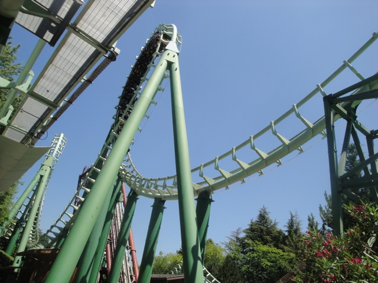
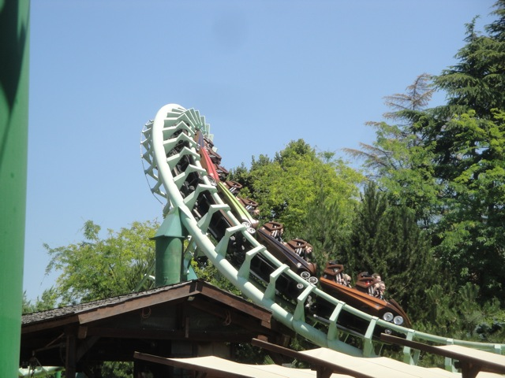

| |
Magic Mountain Review

We're here at Gardaland. Today's ride we'll be reviewing for you is Magic Mountain. This is the park's Loopscrew. And it may not look like anything special. But I will say this about the ride. It may not be an amazing ride or anything, but its definetly the best of its kind. Which ultimately isn't saying that much, but it's still much better than your average loopscrew. We get in the slick cars, pull down the rubber vest restraints, and we're off. You roll down a dip and around a small turn. After this, we then start to climb the lifthill. Hey, at least you get a great view of Lake Garda above the trees from the top of the lifthill. We roll around another turn, get another great view of the Gardaland rides poking out above the trees. And then we go down the first drop. It's fun and all. And hey, there's even a little bit of ejector air if you're sitting in the very back. We then rip through two back to back vertical loops. And hey, they're actually fun. Not amazing or anything, but they actually do give us some nice positive Gs. Impressive little loops. We fly up a small little hill and around your typical Loopscrew banked turn. The hill gives us some airtime. However, there is a little bit of josteling. It's not too bad since this ride is using the vest OTSRs, but yeah. There would be a headbanging smack here if this ride was using traditional OTSRs. We then roll through the two corkscrews. They're fast and we roll through them with some force. Hey, I'm actually really liking this ride. We roll through another small hill before heading straight up into an upward helix. It's not extremely forecful, but I will admit that it is pretty when it rolls through it thanks to the fountain in the middle. And yeah, we just glide into the brake run from there. I know it's weird that I'm responding so positively to an ordinary Loopscrew, but it is a fun ride. It has some airtime, the inversions are forceful, and it's pretty smooth for the most part, excluding that one jolt. I wouldn't say that I recommend it, but it's a fun ride and if you're going to ride any Loopscrew, this a good one to ride.
6/10
Location: Gardaland
Opened: 1985
Built by: Vekoma
Last Ridden: June 22, 2012
Magic Mountain Photos

|